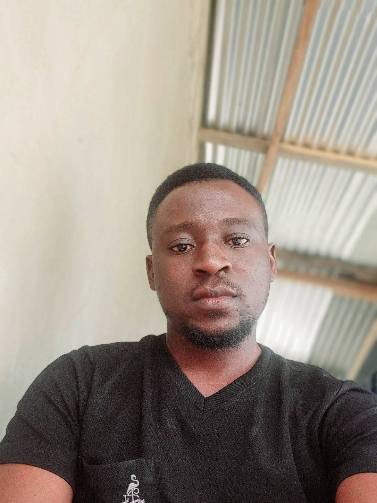

Obed Ofori-Mensah

Summary
I am a passionate Water System Manager with atleast 6 years of hands-on experience overseeing the operation and maintenance of water treatment and distribution systems. Armed with a Bachelor's degree in Natural Resources Management, my commitment to sustainable practices drives my approach to managing water systems efficiently.
Education
- BSc.Natural Resources Mgt - KNUST (2012 - 2016)
- General Science - Osei Kyeretwie Senior High (2008 - 2012)
Work Experience
Water System Manager, Community Water and Sanitation Agency (Sept 2018 - )
- Submission of monthly operational statistics and general correspondence to Regional Director.
- Coordinating, supervising and monitoring daily activities of all staff and ensure that operating data are properly documented.
- Ensuring the system is operating properly and water flowing at all times in compliance with monthly operating statistics and general correspondence to the Regional Director
- Arrange for periodic repairs and maintenance of all aspects of the water system as well as preparing schedules for water quality testing.
- Ensure office records are properly compiled and filed for easy retrieval
Research Assistant (National Service Personnel), CSIR/FORIG (Sept 2017 - Aug 2017)
- Field data collection (member of the VPA/Flegt project at Sokoban Wood Village, Kumasi)
- Assiting with bamboo nursery project (Aprade, Kumasi)
Skills
- Analytical thinking
- Proficiency in programming languages & DBMS (R,Python,SQL,Javascript)
- Data Analysis
- Effective communication and cross-functional team leadership
Awards & Certifications
- Full-Stack Web Developer Bootcamp (Udemy), (Dec 2024 - Mar 2025)
- Meta Frontend Developer Professional Certificate (Coursera), (Dec 2024 - June 2025)
Other